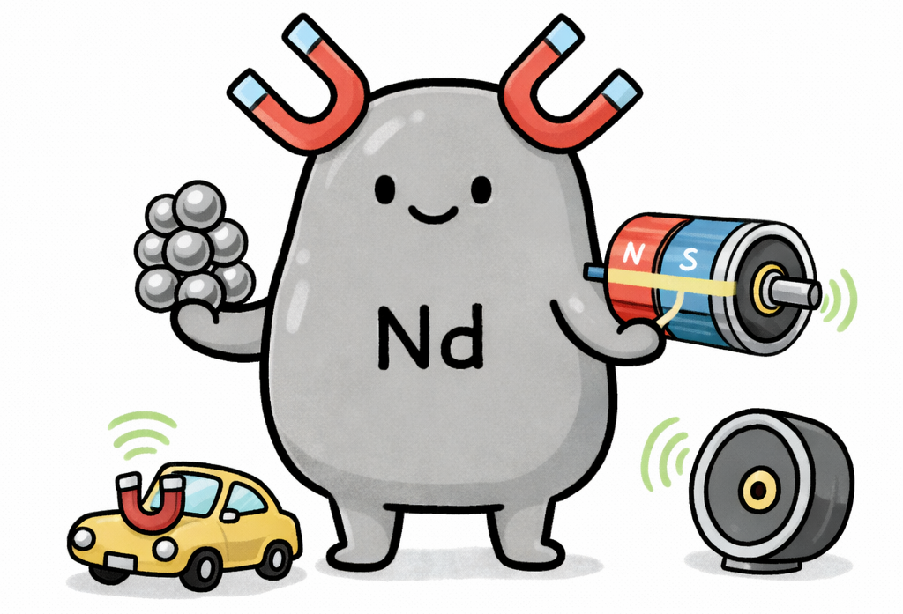
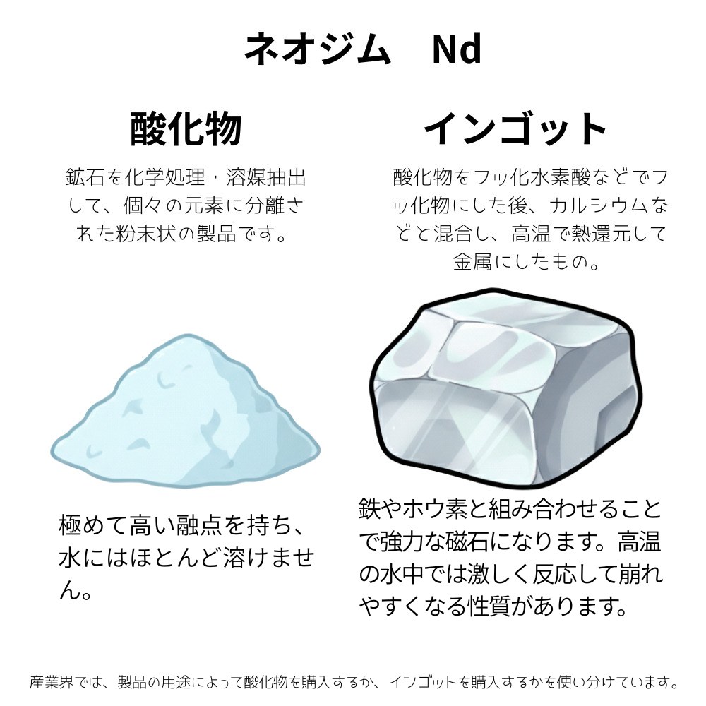
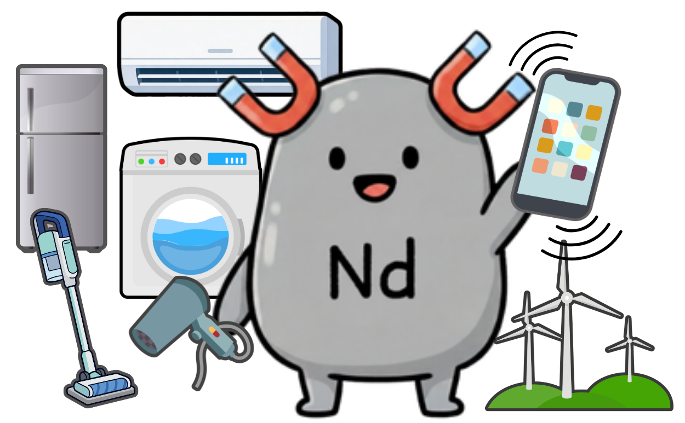

ネオジム
Neodymium

ネオジムは、元素で、『レアアース（希土類元素）』と呼ばれる17種類の一つです。
🔮 擬人化キャラの性格
おっとりのんびりした顔立ちの愛されキャラ。しかし一度スイッチが入ると、レアアース界トップクラスの強力なパワー（磁力）を発揮します！気づけば周りに仲間が集まってしまう不思議なカリスマ性の持ち主で、モーターやハイテク分野の最前線を力強く引っ張るみんなのエースです。

🧪 リアルな元素の特徴
実用的な永久磁石として「トップクラスの磁力」を誇る、ネオジム磁石（ネオジム・鉄・ホウ素）の主原料。電気自動車（EV）の駆動モーターや風力発電機、エアコンのコンプレッサーなど、現代のエレクトロニクスや省エネ技術になくてはならない重要元素です。
| 名称 | ネオジム | 記号 | Nd |
|---|---|---|---|
| 番号 | 60 | 原子量 | 144.24 |
| 密度 | 7.01 g/cm3 | 原子半径 | 185 pm |
| 分類 | 希土類元素（ランタノイド） | ||
💎 ネオジム、実際はどんなもの？

ネオジムは、銀白色の輝きを持つランタノイド元素です。空気中では比較的すみやかに酸化し、表面が変色して剥げ落ちるため、内部まで反応が進んでしまいます。そのため、製品や永久磁石として使う際は、表面にメッキなどの保護処理を施して使用されます。また水との反応性も高く、冷水では徐々に、熱水では激しく反応して水素を発生させる繊細な側面を持っています。

ネオジムは、極めて強力な磁力を生み出す性質を持ち、暮らしや産業を支えるさまざまな製品に欠かせない存在です。エアコンや冷蔵庫、洗濯機、ドライヤー、掃除機といった省エネ家電のモーターをはじめ、スマートフォンのバイブレーション機能、クリーンエネルギーを生み出す風力発電機などに広く利用されています。また、特定の波長の光を制御する性質も活かされ、医療用レーザー（Nd:YAGレーザー）や特殊ガラスなど、幅広いハイテク分野で活躍しています。